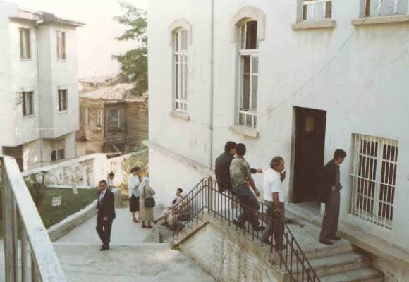
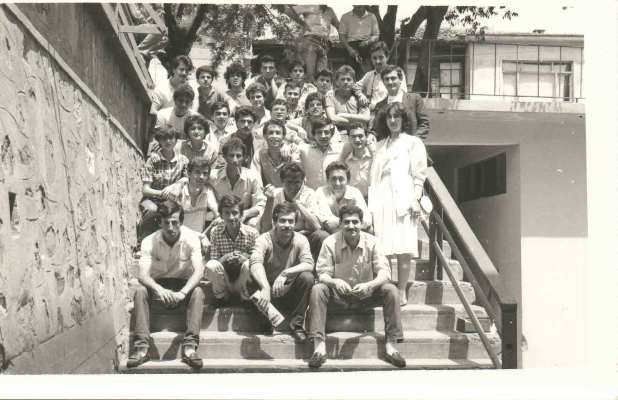

Meslek Yüksekokulumuz, Milli Eğitim Bakanlığı Yükseköğretim Genel Müdürlüğü - Örgün Eğitim Dairesi Başkanlığı’na bağlı olarak, 15 Nisan 1976 tarihinde kurulmuştur. 6 Aralık 1976 tarihinden itibaren, Ertuğrul Mahallesi Kızılay Caddesi’ndeki mülkiyeti Özel İdare Müdürlüğü’ne ait olan ve bugün Namık Kemal İlköğretim Okulu olarak hizmet veren binada, Sosyal Bilimler Bölümü ve Hayati Bilimler Bölümü’ne öğrenci alarak eğitim ve öğretime başlamıştır. 1977–1978 öğretim yılı sonunda, bu bölümlere ait meslek programları (Pazarlama, Sevk ve İdare, Hayvan Besiciliği) ilk mezunlarını vermiştir.
 1978–1979 öğretim yılında, Meslek Yüksekokullarının Teknik Bilimler, Hayati Bilimler ve Sosyal Bilimler bölümlerine Türkiye genelinde öğrenci alımı yapılmamış, mektupla eğitim görmekte olan YAYKUR öğrencileri ikinci sınıfta, Milli Eğitim Bakanlığı’nca Meslek Yüksekokullarına naklen yerleştirilmiştir.
Bu nedenle, Meslek Yüksekokulumuz naklen geçiş yapan öğrencilere yalnızca ikinci sınıf programlarını uygulayarak, ikinci devre mezunlarını vermiştir.
Bu öğretim yılı sonu itibariyle öğrencisiz kalan Meslek Yüksekokulları kapatılmış, “Teknik Yüksekokul” adı altında yeni bir yapılanmaya karar verilmiştir. Ancak, iki ay sonra bu karar iptal edildiğinden Meslek Yüksekokulları 1980-1981 öğretim yılında Teknik Bilimler ve Sosyal Bilimler bölümlerine öğrenci alarak Türkiye genelinde eğitim-öğretime yeniden başlamıştır.
Meslek Yüksekokulumuz 1981–1982 eğitim-öğretim yılında Milli Eğitim Bakanlığı’na bağlı olarak, son mezunlarını İşletme-Muhasebe, Elektronik meslek programlarında vererek toplam 450 öğrenci mezun etmiştir. 2547 Sayılı Yükseköğretim Kanunu gereğince Yükseköğretim Kurumlarının yeniden teşkilatlanmasını düzenlemek için çıkarılan ve 20 Temmuz 1982 tarihli Resmi Gazete’de yayınlanan 41 Sayılı Kanun Hükmündeki Kararname ile “Tekirdağ Meslek Yüksekokulu” adıyla, yeni kurulan Trakya Üniversitesi Tekirdağ Ziraat Fakültesi Dekanlığı’na bağlanmıştır. 1982–1983 Eğitim-Öğretim yılından itibaren Trakya Üniversitesi Tekirdağ Ziraat Fakültesi Dekanlığı’na bağlı olarak faaliyetini sürdüren Tekirdağ Meslek Yüksekokulu, Teknik Programlarda eğitim- öğretim ve yeni yapılanma neticesinde ilave edilen Elektrik, Motor ve Fermantasyon programlarıyla eğitim-öğretim faaliyetini genişletip, gelişme sürecine girmiştir.